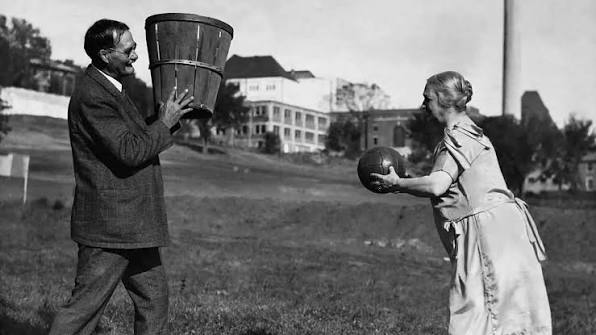
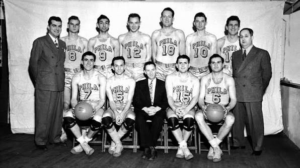
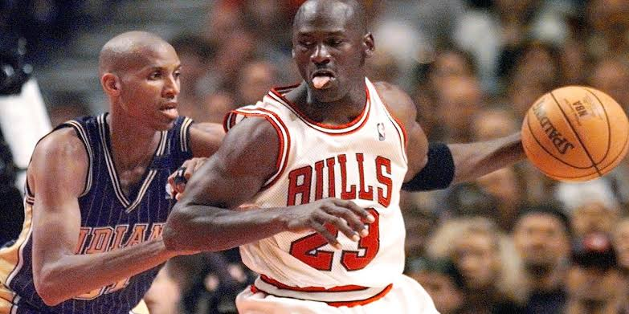
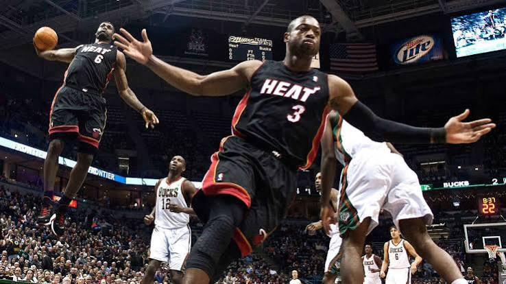
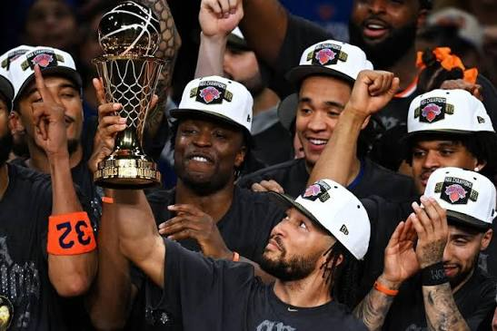

Basketball was invented in 1891 by Dr. james naismith a canadian physical education instuctor at the International YMCA Training School in Springfield, Massachusetts. He created basketball so his students can play sports indoors during the winter in new england. The first game was at december 21 1891 with 9 players each side. The final score was 1 to 0 and there were no dribbling allowed so the players have to pass all the time and their can ankle break someone. Someone had to use a ladder to get ball out of the basket. Then in 1906 they switch from baskets to iron rings with nets so they no need a person climbing up to get the ball.

Back then the NBA wasn`t called the NBA rather it was called BAA (Basketball Association Of America). The BAA launched the first season in 1946 with 11 teams and they were the boston celtics, new york knicks, philadelphia warriors(Relocated in 1962 to become today's Golden State Warriors), toronto huskies, cleveland rebels, detroit falcon, etc. Then in 1949 the NBL and BAA merge into 1 becoming today's NBA. The minneapolis lakers fom 1949 to 1954 become the first NBA dynasty with their star player the true superstar, george mikan as a 6 foot 10 center with the best post plays that won them games. Then one day when the lakers was against the fort wayne pistons when they got an idea is to hold the ball so george mikan can't score. with the game final score was 19-18 piston won then the NBA change the rules adding the 24-second rule which makes game score much more. The NBA even made the free throw line more farther from 6 feet to 12 feet.
When george mikan retired in 1954 the minneapolis lakers was on a downfall losing games alot and then in the 1955-1956 NBA season george mikan launched a comeback midway through the 1955-1956 season. but george mikan was not the dominant center as he used to resulting that george mikan only played 37 games and officialy retiring in the age of 31.

The golden era of the NBA with michael jordan, shaquille O`neal, hakeem olajuwon with there own skils like jordan's middy, shaquille's monster dunk, hakeem olajuwon dunks and many more. People saying that NBA in the 90s can beat the today's NBA. in the 90s chicago was in their prime with their star player michael jordan, scottie pippen and dennis rodman winning 6 rings in a decade. chicago won the NBA championship back to back three times twice. hakeem olajuwon one of the greatest defensive player winning the NBA championship back to back from 1994-1995 becoming finals mvp twice with the houston rockets. with karl malone winning mvp and david robinson winning the mvp trophy and others.

the NBA change because of stephen curry since now kids are chucking up unthinkable threes and blaming stephen curry for making them do it. related to curry that the golden state warriors dynasty with kevin durant was peak winning 3 championship in 2015 and 2017-2018 with andre iguedola winning finals mvp in 2015 and kevin durant winning the finals mvp back to back with the warriors. also in 2012 to 2013 was the miami heat dynasty when lebron james, dwyane wade, and chris bosh winning the NBA championship back to back from 2012 to 2013 with lebron winning finals mvp twice with the miami heat. and in 2016 kobe bryant retired and his last game he drop 60 on the jazz with no mercy. rest in peace black mamba. in 2014 the spurs won the championship against versusing the miami heat the defending champs. and curry winning 2 mvp's back to back from 2015-2016 and golden state warrior still holds the 73-9 record in 2016.
James harden was also in his peak in 2019 with the double stepback, ankle breakers and many more. james harden in 2019 was shai but different with harden foulbating. The NBA had to change their rule that a certain foul is blah blah blah. lebron with cleveland in 2016 with comeback from a 3-1 deficit to forcing game 7 and winning it all.

now we are in the today NBA where they're's generational talent like victor wembanyama , tyrese haliburton, anthony edwards with a good percentage on three. haliburton has enhanced three point shoot and crafty handle, wemby with the defense blocking player without jumping and anthony edwards with his athleticsm and dunking abilities. jalen brunson carrying new york knicks their first championship in 50 years.
now almost everyone in the league can shoot three's as their main source to get free easy points. with bigman shooting three's like wembanyama, jokic, lebron james, karl-anthony-towns, etc. with the 2019-2026 with 8 different teams winning a championship from toronto raptors to new york knicks.
by Muhammad Arsya Pako Ramadhan
created 18/09/2026